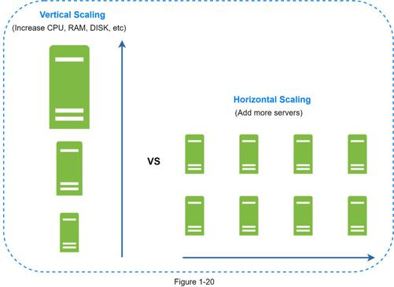
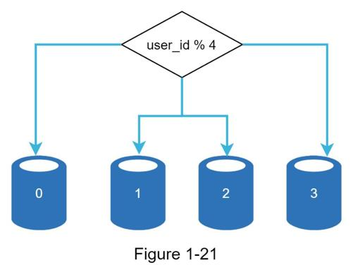
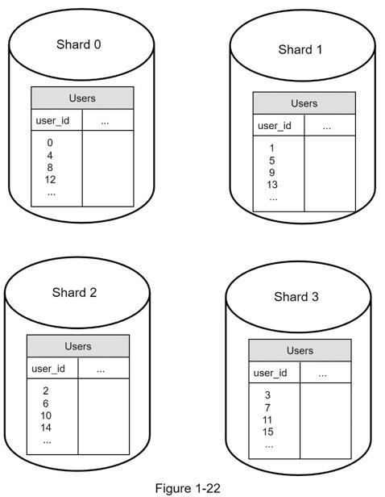
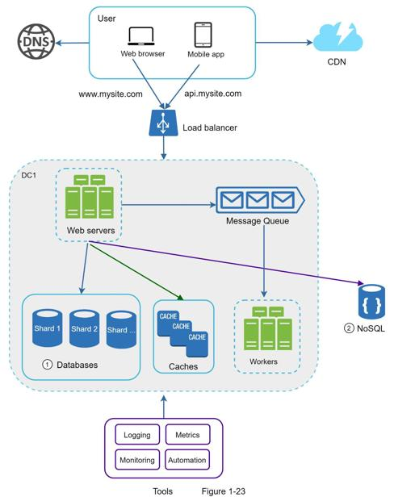

There are two broad approaches for database scaling: vertical scaling and horizontal scaling.
Vertical scaling, also known as scaling up, is the scaling by adding more power (CPU, RAM, DISK, etc.) to an existing machine. There are some powerful database servers. According to Amazon Relational Database Service (RDS) [12], you can get a database server with 24 TB of RAM. This kind of powerful database server could store and handle lots of data. For example, stackoverflow.com in 2013 had over 10 million monthly unique visitors, but it only had 1 master database [13]. However, vertical scaling comes with some serious drawbacks:
•You can add more CPU, RAM, etc. to your database server, but there are hardware limits. If you have a large user base, a single server is not enough.
•Greater risk of single point of failures.
•The overall cost of vertical scaling is high. Powerful servers are much more expensive.
Horizontal scaling, also known as sharding, is the practice of adding more servers. Figure 1-20 compares vertical scaling with horizontal scaling.

Sharding separates large databases into smaller, more easily managed parts called shards. Each shard shares the same schema, though the actual data on each shard is unique to the shard.
Figure 1-21 shows an example of sharded databases. User data is allocated to a database server based on user IDs. Anytime you access data, a hash function is used to find the corresponding shard. In our example, user_id % 4 is used as the hash function. If the result equals to 0, shard 0 is used to store and fetch data. If the result equals to 1, shard 1 is used. The same logic applies to other shards.

Figure 1-22 shows the user table in sharded databases.

The most important factor to consider when implementing a sharding strategy is the choice of the sharding key. Sharding key (known as a partition key) consists of one or more columns that determine how data is distributed. As shown in Figure 1-22, “user_id” is the sharding key. A sharding key allows you to retrieve and modify data efficiently by routing database queries to the correct database. When choosing a sharding key, one of the most important criteria is to choose a key that can evenly distributed data.
Sharding is a great technique to scale the database but it is far from a perfect solution. It introduces complexities and new challenges to the system:
Resharding data: Resharding data is needed when 1) a single shard could no longer hold more data due to rapid growth. 2) Certain shards might experience shard exhaustion faster than others due to uneven data distribution. When shard exhaustion happens, it requires updating the sharding function and moving data around. Consistent hashing, which will be discussed in Chapter 5, is a commonly used technique to solve this problem.
Celebrity problem: This is also called a hotspot key problem. Excessive access to a specific shard could cause server overload. Imagine data for Katy Perry, Justin Bieber, and Lady Gaga all end up on the same shard. For social applications, that shard will be overwhelmed with read operations. To solve this problem, we may need to allocate a shard for each celebrity. Each shard might even require further partition.
Join and de-normalization: Once a database has been sharded across multiple servers, it is hard to perform join operations across database shards. A common workaround is to de-normalize the database so that queries can be performed in a single table.
In Figure 1-23, we shard databases to support rapidly increasing data traffic. At the same time, some of the non-relational functionalities are moved to a NoSQL data store to reduce the database load. Here is an article that covers many use cases of NoSQL [14].
